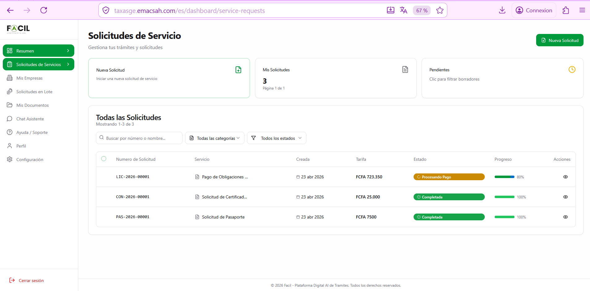
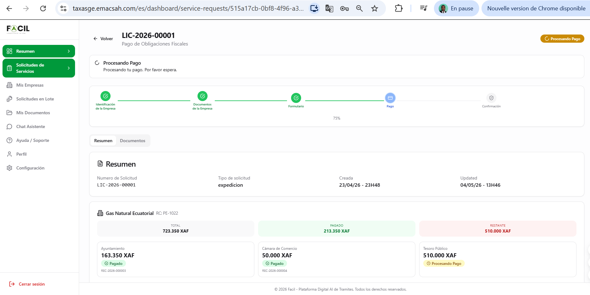
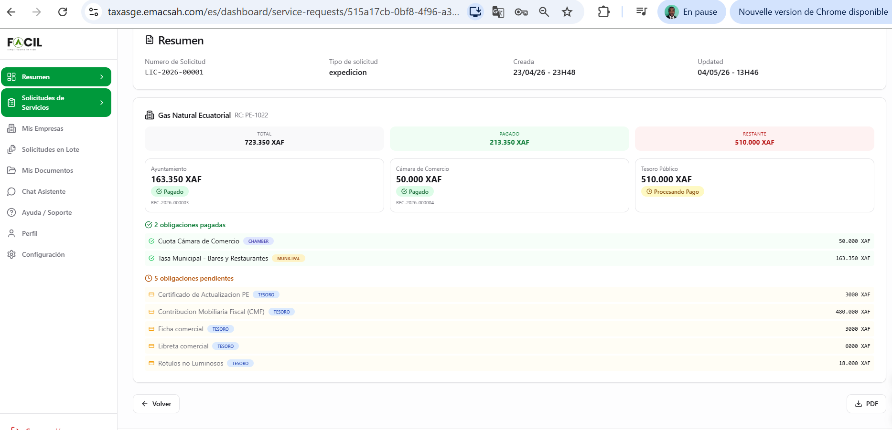

Mis solicitudes de servicio
Centralice todas sus solicitudes en una sola pantalla con filtros, KPIs y acceso al detalle. Consulte el progreso vía un stepper visual, descargue los documentos PDF, y siga la validación por las entidades emisoras.
1. Acceder a la lista
Desde el menú lateral → «Solicitudes Servicios». URL directa : https://taxasge.emacsah.com/dashboard/service-requests. La página agrupa todas sus solicitudes activas e históricas (citoyen + empresas si tiene varios roles).
2. KPIs y filtros
3 tarjetas KPI en la parte superior:
- Nueva Solicitud (botón) — atajo hacia el wizard
- Mis Solicitudes — total de solicitudes con paginación (ej. «3, Página 1 de 1»)
- Pendientes — número de solicitudes que esperan una acción de su parte
Filtros disponibles encima de la tabla : buscar por referencia, todas las categorías (Identidad, Conducción, Comercio, etc.), todos los estados (Borrador, Enviada, Procesando, Completada, Rechazada).

3. Tabla de solicitudes
Cada línea de la tabla muestra : Referencia (LIC-/CON-/PAS-), Tipo, Monto en XAF, Estado actual con barra de progreso (% completado). Pulse cualquier línea para abrir el detalle.
Las solicitudes están ordenadas por defecto del más reciente al más antiguo. Use los filtros para encontrar rápidamente una solicitud específica.
4. Detalle de una solicitud — stepper visual
La pantalla de detalle de una solicitud muestra el progreso de manera muy visual con un stepper horizontal indicando las etapas validadas (verde) y la etapa en curso (azul). El % de progreso global está visible (ejemplo: 75% — 4/5 etapas validadas).
Cabecera del detalle
- Número de referencia (LIC-2026-00001)
- Título del trámite (Pago de Obligaciones Fiscales)
- Badge estado (Procesando Pago, en color)
- Stepper con las 5 etapas y el % global

Pestañas del detalle
- Resumen : datos principales del trámite, fechas creación/actualización, importe total
- Documentos : todos los documentos subidos por usted + documentos generados (PDFs, recibos)
Para solicitudes de empresa (LIC-)
Si la solicitud concierne a una empresa, el detalle muestra 3 sub-tarjetas por entidad emisora con el estado de cada sub-pago : Ayuntamiento, Cámara de Comercio, Tesoro Público. Cada sub-tarjeta enlaza al recibo correspondiente (REC-2026-XXXXX).

5. Estados posibles de una solicitud
| Estado | Significado | Acción esperada |
|---|---|---|
| Borrador | Wizard interrumpido antes del pago | Reanudar el wizard |
| Enviada | Solicitud completa, esperando validación de pago | Esperar (1-3 días) o pagar |
| Procesando | Pago validado, agente en revisión | Esperar (5-15 días según trámite) |
| En revisión | Agente solicita información adicional | Aportar documentos solicitados |
| Completada | Trámite finalizado con éxito | Descargar el documento final |
| Rechazada | Solicitud rechazada con motivo | Leer el motivo y reiniciar si procede |